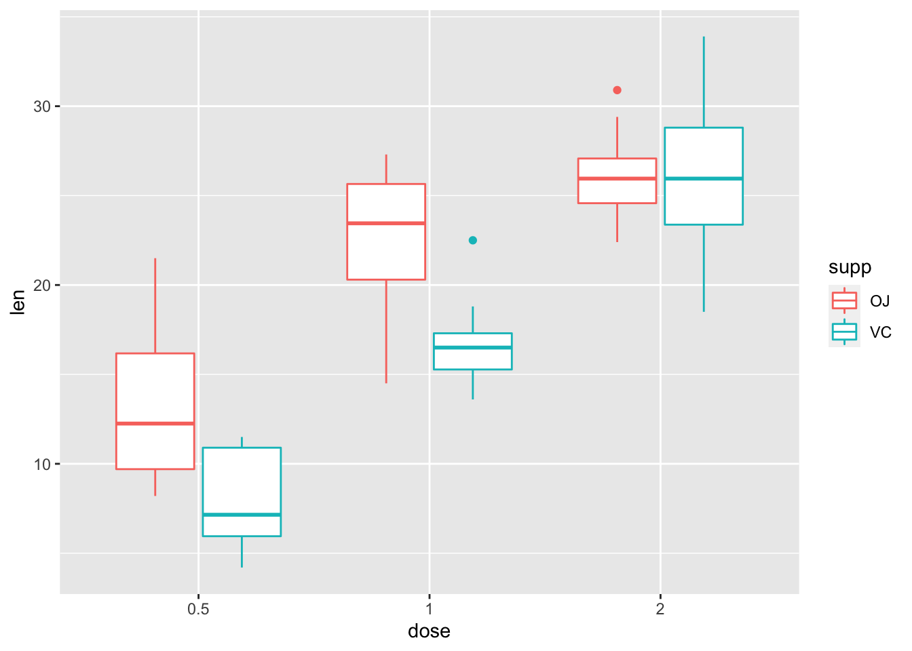

Chapter 7 Advanced Statistical Tests
In this session, we’ll cover more advanced statistical tests, such as multifactorial experiments and experiments with factors of more than 2 levels.
Specifically, we’ll cover:
- multilevel and multifactorial ANOVA
- multilevel and multiple regression
- factor coding (and why it matters in R)
- sum of squares (and why this matters in R)
As with the previous section, this section assumes some familiarity with basic statistics. It is beyond the score of this section to teach the basics behind all of these methods, but we will cover some background on how these methods work, and why you might choose to use them in different scenarios.
7.1 Getting Started
As always, we first need to load the tidyverse set of packages for this Chapter.
library(tidyverse)7.2 Multilevel Analyses
Often, your experiments will have more than one level for a factor. However, how you code these factors determines the answers that you get from your analyses.
Take for example evaluating the efficacy of a host of drugs. We often want to compare performance of several drugs against a placebo. In this case, we might perform an analysis where we compare different levels of one factor (drug; with placebo, drug one, and drug two levels) against a reference level (drug level one; placebo). In this case, we would use treatment coding for our factors, as we only want to know if drug one and drug two perform differently from the placebo. That is, we are interested in the simple effects of the drug.
However, in other instances we might want to detect a main effect of a factor to see if there is an overall effect of condition, and you want to explore which conditions differ after the fact. In this case, we might want to use deviation or sum coding for our factors, and as such we want to test for the main effect of condition.
To explore main effects for the ANOVA and for the multilevel regression, we’ll simulate some data. We’ll use a similar (but more complex) example from the previous lesson.
We’ll simulate data for a numerical stroop task, where subjects need to pick the highest value number from two numbers. Crucially, these numbers can be displayed such that the highest number is biggest in font size (congruent), smallest in font size (incongruent), or the two numbers have their fonts at an equal size (neutral). Our hypothesis is that participants will identify the larger number most quickly if the size and magnitude of the number of congruent, slower if they are neutral, and slowest if they are incongruent.
We’ll generate 60 subjects, with the congruent reaction time being around 400ms, the incongruent reaction time being on average 60ms slower than this, and the neutral condition around 30ms slower than the congruent condition (and thus around 30ms faster than the neutral condition).
Finally, we’ll gather the data together, assuming you’ll often have your data in a long format.
set.seed(1000)
stroop_dat <- tibble(
subject = seq(1:60),
congruent = rnorm(mean = 400, sd = 30, n = 60),
incongruent = congruent + rnorm(mean = 60, sd = 10, n = 60),
neutral = congruent + rnorm(mean = 30, sd = 10, n = 60)
) %>%
gather(key = cond, value = reaction_time, 2:4) %>%
mutate(
cond = as.factor(cond),
log_RT = log(reaction_time)
)To explore simple effects, we’ll create some data that looks at the effects of a drug intervention on blood oxygen levels (outcome) for smokers. We have a control condition (placebo) where the oxygen level is on average 80mm Hg, “drug_one”, which on average should be no different to the placebo, and “drug_two”, which increases blood oxygen to around 100mm Hg. Here, we simply want to know if either of the drugs perform any better than the control condition. (Note, I have no idea if these are realistic values, but that’s not the point of this exercise!)
# set parameters
set.seed(1000)
means <- rep(c(80, 80, 100), 100)
sds <- rep(c(5, 5, 7), 100)
# simulate data
cond <- rep(c("control", "drug_one", "drug_two"), 100)
subject <- seq(1:300)
smoking_dat <- tibble(
subject = subject,
cond = as.factor(cond),
outcome = rnorm(n = 300, mean = means, sd = sds)
)7.2.1 Preparation of Data
7.2.1.1 Factors
In the above examples, we’ve created data sets where our condition column is stored as a factor. Take a look at this:
stroop_dat## # A tibble: 180 × 4
## subject cond reaction_time log_RT
## <int> <fct> <dbl> <dbl>
## 1 1 congruent 387. 5.96
## 2 2 congruent 364. 5.90
## 3 3 congruent 401. 5.99
## 4 4 congruent 419. 6.04
## 5 5 congruent 376. 5.93
## 6 6 congruent 388. 5.96
## 7 7 congruent 386. 5.96
## 8 8 congruent 422. 6.04
## 9 9 congruent 399. 5.99
## 10 10 congruent 359. 5.88
## # … with 170 more rowssmoking_dat## # A tibble: 300 × 3
## subject cond outcome
## <int> <fct> <dbl>
## 1 1 control 77.8
## 2 2 drug_one 74.0
## 3 3 drug_two 100.
## 4 4 control 83.2
## 5 5 drug_one 76.1
## 6 6 drug_two 97.3
## 7 7 control 77.6
## 8 8 drug_one 83.6
## 9 9 drug_two 99.9
## 10 10 control 73.1
## # … with 290 more rowsThis is because I used mutate() to change the column from a character data type, to a factor data type. The nice thing about storing your factors this way is that we can see the levels that make up our factor:
levels(stroop_dat$cond)## [1] "congruent" "incongruent" "neutral"levels(smoking_dat$cond)## [1] "control" "drug_one" "drug_two"If your data isn’t stored as a factor, you can convert it to one using as.factor() or factor() on your column (e.g. data$factor <- as.factor(data$factor)).
7.2.1.2 Contrast Matrices
We can see how we specify our contrasts for our tests by using the contrasts() function any any factors.
Let’s look back at the Stroop data when we only had two levels of condition, congruent and incongruent. Here, we’ll subset the data and then use the contrasts() function to look at the contrast matrix. We’ll also mutate the cond column to itself as a factor so we drop the level that is no longer present (i.e. neutral) ; this is just a little R trick!
# make data 2 levels and convert condition to a factor
stroop_subset <- stroop_dat %>%
filter(cond %in% c("congruent", "incongruent")) %>%
mutate(cond = factor(cond))
# see your contrasts
contrasts(stroop_subset$cond)## incongruent
## congruent 0
## incongruent 1We can see from our contrast matrix that the congruent condition is assigned a value of 0, and the incongruent condition is assigned a value of 1. What this means is that our intercept in our linear model is the congruent condition, and we evaluate the effect of a shift in condition by 1 point (i.e. to the incongruent condition) against this reference level. Remember that in a linear model, the intercept is the point on the y-axis where x is 0.
Let’s fit a linear model to see how this works. Notice that we fit the model and then (%>%) use the summary() function to see the output of the model:
lm(log_RT ~ cond, stroop_subset) %>% summary()##
## Call:
## lm(formula = log_RT ~ cond, data = stroop_subset)
##
## Residuals:
## Min 1Q Median 3Q Max
## -0.15379 -0.04888 0.00581 0.03781 0.19539
##
## Coefficients:
## Estimate Std. Error t value Pr(>|t|)
## (Intercept) 5.978613 0.009196 650.14 <2e-16 ***
## condincongruent 0.145808 0.013005 11.21 <2e-16 ***
## ---
## Signif. codes: 0 '***' 0.001 '**' 0.01 '*' 0.05 '.' 0.1 ' ' 1
##
## Residual standard error: 0.07123 on 118 degrees of freedom
## Multiple R-squared: 0.5158, Adjusted R-squared: 0.5117
## F-statistic: 125.7 on 1 and 118 DF, p-value: < 2.2e-16We can see that our parameter estimate for the intercept is 5.979, and being in the congruent condition adds 0.145 to the intercept value of 5.979, which sums to 6.124. How does this equate to our mean scores?
stroop_subset %>%
group_by(cond) %>%
summarise(mean = mean(log_RT))## # A tibble: 2 × 2
## cond mean
## <fct> <dbl>
## 1 congruent 5.98
## 2 incongruent 6.12Great, our intercept corresponds to the mean of the congruent condition, and our effect of condition is the difference between the two means! That’s because we used treatment coding, which is the default in R. This means that the intercept is alwasy the first alphabetic level of our conditions.
But what if we want to change the reference level of our intercept? This is important if we want to look at different contrasts when we have more than 1 level in a factor, or more than 2 factors in a model.
To change our intercept, we must change our contrast matrix. To change this we use the contrasts() function on our condition factor, to see what our contrasts are, and we can then define the contrasts we’d like using some inbuilt functions in R. Here, we’ll change the coding to sum coding using contr.sum. (Others are available, such as contr.helmert, etc.)
contrasts(stroop_subset$cond) <- contr.sum
contrasts(stroop_subset$cond)## [,1]
## congruent 1
## incongruent -1Now, our contrast matrix sums to 0. Remember that our intercept is 0, so the intercept is now the mid-point between the 2 conditions, or the mean across both conditions. Let’s refit our model and see this in action.
lm(log_RT ~ cond, stroop_subset) %>% summary()##
## Call:
## lm(formula = log_RT ~ cond, data = stroop_subset)
##
## Residuals:
## Min 1Q Median 3Q Max
## -0.15379 -0.04888 0.00581 0.03781 0.19539
##
## Coefficients:
## Estimate Std. Error t value Pr(>|t|)
## (Intercept) 6.051517 0.006502 930.65 <2e-16 ***
## cond1 -0.072904 0.006502 -11.21 <2e-16 ***
## ---
## Signif. codes: 0 '***' 0.001 '**' 0.01 '*' 0.05 '.' 0.1 ' ' 1
##
## Residual standard error: 0.07123 on 118 degrees of freedom
## Multiple R-squared: 0.5158, Adjusted R-squared: 0.5117
## F-statistic: 125.7 on 1 and 118 DF, p-value: < 2.2e-16Now our intercept is 6.052, and the effect of condition (now labelled cond1; the first (and only) contrast in our contrast matrix for condition) is -0.073. Crucially, since we only have 2 levels of condition, our interpretation of all of the statistics in this model remains the same, only our intercept paramter estimate is different to before. Further, the parameter estimate for condition (and the standard error of this estimate) are half as large as before, but this is just due to the scale on which our factor is evaluated; the t- and p-values remain the same.
How does the intercept relate to our means? Check it out!
stroop_subset %>% summarise(mean = mean(log_RT))## # A tibble: 1 × 1
## mean
## <dbl>
## 1 6.05The mean for both conditions is the intercept for our linear model.
7.2.2 Multilevel Regression
What happens if we have some more complex data? Let’s look at the contrast matrix for the full Stroop data:
contrasts(stroop_dat$cond)## incongruent neutral
## congruent 0 0
## incongruent 1 0
## neutral 0 1You can see that right now, the first row for the congruent condition sums to 0. Whereas the incongruent and neutral condition rows sum to 1. This means that the congruent condition will be the intercept in our model, and the incongruent and neutral conditions will be the other parameters in our model. Let’s see this in action.
lm(log_RT ~ cond, data = stroop_dat) %>% summary##
## Call:
## lm(formula = log_RT ~ cond, data = stroop_dat)
##
## Residuals:
## Min 1Q Median 3Q Max
## -0.180561 -0.052211 0.002842 0.042382 0.195386
##
## Coefficients:
## Estimate Std. Error t value Pr(>|t|)
## (Intercept) 5.978613 0.009308 642.314 < 2e-16 ***
## condincongruent 0.145808 0.013163 11.077 < 2e-16 ***
## condneutral 0.073206 0.013163 5.561 9.74e-08 ***
## ---
## Signif. codes: 0 '***' 0.001 '**' 0.01 '*' 0.05 '.' 0.1 ' ' 1
##
## Residual standard error: 0.0721 on 177 degrees of freedom
## Multiple R-squared: 0.4094, Adjusted R-squared: 0.4027
## F-statistic: 61.35 on 2 and 177 DF, p-value: < 2.2e-16Again, we’ll check how these parameters correspond to our means for each group.
stroop_dat %>% group_by(cond) %>% summarise(mean = mean(log_RT))## # A tibble: 3 × 2
## cond mean
## <fct> <dbl>
## 1 congruent 5.98
## 2 incongruent 6.12
## 3 neutral 6.05Great, the intercept is indeed the mean for the congruent condition, and the incongruent condition (cond2) and neutral (cond3) are the difference between the intercept mean and that reference level’s mean.
Instead, we could get sum coded effects as before.
contrasts(stroop_dat$cond) <- contr.sum
contrasts(stroop_dat$cond)## [,1] [,2]
## congruent 1 0
## incongruent 0 1
## neutral -1 -1Now the first 2 rows sum to 1, which together makes 2, and the final row sums to -2. Together, the intercept or 0 is the average across these contrasts. How does this affect our model?
lm(log_RT ~ cond, data = stroop_dat) %>% summary##
## Call:
## lm(formula = log_RT ~ cond, data = stroop_dat)
##
## Residuals:
## Min 1Q Median 3Q Max
## -0.180561 -0.052211 0.002842 0.042382 0.195386
##
## Coefficients:
## Estimate Std. Error t value Pr(>|t|)
## (Intercept) 6.051618 0.005374 1126.106 <2e-16 ***
## cond1 -0.073005 0.007600 -9.606 <2e-16 ***
## cond2 0.072803 0.007600 9.580 <2e-16 ***
## ---
## Signif. codes: 0 '***' 0.001 '**' 0.01 '*' 0.05 '.' 0.1 ' ' 1
##
## Residual standard error: 0.0721 on 177 degrees of freedom
## Multiple R-squared: 0.4094, Adjusted R-squared: 0.4027
## F-statistic: 61.35 on 2 and 177 DF, p-value: < 2.2e-16Now we can see that the intercept has changed, and now the congruent and incongruent condition are considered against the grand mean across all levels, so their terms have changed too.
stroop_dat %>% summarise(mean = mean(log_RT))## # A tibble: 1 × 1
## mean
## <dbl>
## 1 6.05Check the following values against the group means above: 6.0516 - 0.073 = 5.978613 and 6.0516 + 0.0728 = 6.124421, you can see that the group means for the congruent and incongruent condition equate to the intercept + the new paramter estimates.
Again, however, the main effect of our model remains unchanged regardless of the coding scheme used.
For now, we’ll return to using treatment coding and we’ll explore changing the order for the intercept. If we want to change the order, or determine exactly which level will be the intercept, we simply have to relevel our factor before defining our contrasts:
contrasts(stroop_dat$cond) <- contr.treatment
stroop_dat$cond <- factor(stroop_dat$cond, levels = c("neutral", "congruent", "incongruent"))Here, we simply asked R to remake our condition column from a factor of our condition column, but with specifically ordered levels.
Now when we specify our treatment contrasts, the reference level (i.e. 0) will be the first level that we specified above (neutral, in this instance).
contrasts(stroop_dat$cond)## congruent incongruent
## neutral 0 0
## congruent 1 0
## incongruent 0 1We’ll rerun the model to see how our intercept has changed.
lm(log_RT ~ cond, data = stroop_dat) %>% summary##
## Call:
## lm(formula = log_RT ~ cond, data = stroop_dat)
##
## Residuals:
## Min 1Q Median 3Q Max
## -0.180561 -0.052211 0.002842 0.042382 0.195386
##
## Coefficients:
## Estimate Std. Error t value Pr(>|t|)
## (Intercept) 6.051819 0.009308 650.179 < 2e-16 ***
## condcongruent -0.073206 0.013163 -5.561 9.74e-08 ***
## condincongruent 0.072602 0.013163 5.515 1.22e-07 ***
## ---
## Signif. codes: 0 '***' 0.001 '**' 0.01 '*' 0.05 '.' 0.1 ' ' 1
##
## Residual standard error: 0.0721 on 177 degrees of freedom
## Multiple R-squared: 0.4094, Adjusted R-squared: 0.4027
## F-statistic: 61.35 on 2 and 177 DF, p-value: < 2.2e-16This looks very similar to the grand mean, but notice the value of the parameter estimate beyond 3 decimal places. The paramter estimate is now 6.051819 which is the value of the mean for the neutral condition (while 6.051618 is the value of the grand mean across all conditions).
7.2.3 Multilevel ANOVA
Let’s say we’re interested in main effects and we want to see if there is a main effect of condition in the numerical stroop task. Nicely, the aov() function defaults to give us main effects in the form of a traditional ANOVA output.
Let’s see how this works.
stroop_aov <- aov(log_RT ~ cond, data = stroop_dat)
summary(stroop_aov)## Df Sum Sq Mean Sq F value Pr(>F)
## cond 2 0.6378 0.3189 61.35 <2e-16 ***
## Residuals 177 0.9201 0.0052
## ---
## Signif. codes: 0 '***' 0.001 '**' 0.01 '*' 0.05 '.' 0.1 ' ' 1Now, our model corresponds to the model output that we got using the lm() function. Look at the bottom of the results from the linear model in the previous section, the F, df, and p-values are the same. This is because the aov() function is simply a wrapper for our linear model that gives us main effects! Under the hood, aov() is just lm(), only without the additional model coefficients from the linear model.
However, if we’ve already fitted a model using the aov() function, but we want to retrieve the model coefficients, we can use a different type of summary() function, summary.lm(). This makes R give us our model with a linear model output.
summary.lm(stroop_aov)##
## Call:
## aov(formula = log_RT ~ cond, data = stroop_dat)
##
## Residuals:
## Min 1Q Median 3Q Max
## -0.180561 -0.052211 0.002842 0.042382 0.195386
##
## Coefficients:
## Estimate Std. Error t value Pr(>|t|)
## (Intercept) 6.051819 0.009308 650.179 < 2e-16 ***
## condcongruent -0.073206 0.013163 -5.561 9.74e-08 ***
## condincongruent 0.072602 0.013163 5.515 1.22e-07 ***
## ---
## Signif. codes: 0 '***' 0.001 '**' 0.01 '*' 0.05 '.' 0.1 ' ' 1
##
## Residual standard error: 0.0721 on 177 degrees of freedom
## Multiple R-squared: 0.4094, Adjusted R-squared: 0.4027
## F-statistic: 61.35 on 2 and 177 DF, p-value: < 2.2e-16Again, the fit from this model gives coefficients which correspond to those that we determine using the contrasts() function.
This contrast coding will become more important as we fit more factors in our models.
7.2.4 Multiple Contrasts
Let’s say we have the smoking data set, and we’re interested in whether two drugs differ from a placebo. We can fit the model with a treatment coded contrast matrix so that the intercept is the placebo (control group), and the other conditions are compared against this reference value. We’ll fit this with a linear model, seeing as we care about the model coefficients.
smoking_lm <- lm(outcome ~ cond, data = smoking_dat)
summary(smoking_lm)##
## Call:
## lm(formula = outcome ~ cond, data = smoking_dat)
##
## Residuals:
## Min 1Q Median 3Q Max
## -15.7906 -3.1192 0.0561 3.1747 18.4927
##
## Coefficients:
## Estimate Std. Error t value Pr(>|t|)
## (Intercept) 79.6866 0.5508 144.670 <2e-16 ***
## conddrug_one 0.7748 0.7790 0.995 0.321
## conddrug_two 20.5112 0.7790 26.331 <2e-16 ***
## ---
## Signif. codes: 0 '***' 0.001 '**' 0.01 '*' 0.05 '.' 0.1 ' ' 1
##
## Residual standard error: 5.508 on 297 degrees of freedom
## Multiple R-squared: 0.75, Adjusted R-squared: 0.7483
## F-statistic: 445.4 on 2 and 297 DF, p-value: < 2.2e-16As you can see, the two drug conditions are compared aginst the intercept for the placebo condition. However, what if we want to consider the effectiveness of the two drugs against one-another?
We have two options:
- Relevel your factor so that you can compare drug_one to drug_two (i.e. set drug_one as the intercept)
- Calculate the differences in the parameter estimates for the two rows in the table.
The first option is easiest if we only have a few levels in a factor. The second is handy if we have a lot of levels, but requires us to specify a complex contrast matrix. For the first option, we simply need to do something like this:
smoking_dat$cond <- factor(smoking_dat$cond, levels = c("drug_one", "drug_two", "control"))
smoking_lm2 <- lm(outcome ~ cond, data = smoking_dat)
summary(smoking_lm2)##
## Call:
## lm(formula = outcome ~ cond, data = smoking_dat)
##
## Residuals:
## Min 1Q Median 3Q Max
## -15.7906 -3.1192 0.0561 3.1747 18.4927
##
## Coefficients:
## Estimate Std. Error t value Pr(>|t|)
## (Intercept) 80.4614 0.5508 146.077 <2e-16 ***
## conddrug_two 19.7364 0.7790 25.337 <2e-16 ***
## condcontrol -0.7748 0.7790 -0.995 0.321
## ---
## Signif. codes: 0 '***' 0.001 '**' 0.01 '*' 0.05 '.' 0.1 ' ' 1
##
## Residual standard error: 5.508 on 297 degrees of freedom
## Multiple R-squared: 0.75, Adjusted R-squared: 0.7483
## F-statistic: 445.4 on 2 and 297 DF, p-value: < 2.2e-16Now our intercept is drug_one, the parameter estimate for conddrug_two is the difference between drug_one and drug_two, and condcontrol corresponds to the parameter estimates for the difference between drug_one and the control condition. Notice that condcontrol here equates to conddrug_one in the original model.
For more complex cases (i.e. several levels) there are helper packages such as multcomp which allows you to specify a contrast matrix and conduct multiple comparisons on your model, but we won’t get into that here.
7.3 Multifactorial Analyses
Now we’ll look at cases where we have more than one factor. Here, we’ll use one of R’s inbuilt data sets, ToothGrowth, which looks at the effect of vitamin C on tooth growth in guinea pigs. This data set has 3 columns:
- len: tooth length
- supp: supplement type (vitamin C supplement or orange juice)
- dose: strength of dose
Most importantly, supplement is a factor with 2 levels, and dose is a numeric variable with 3 levels, but the same principles apply to more complex designs.
Load the data, and save it as a tibble with the columns saved as factors:
# load the data
data("ToothGrowth")
# convert to tibble and make dose a factor
tooth <- ToothGrowth %>%
mutate(dose = factor(dose)) %>%
as.tibble()
# see the output
tooth## # A tibble: 60 × 3
## len supp dose
## <dbl> <fct> <fct>
## 1 4.2 VC 0.5
## 2 11.5 VC 0.5
## 3 7.3 VC 0.5
## 4 5.8 VC 0.5
## 5 6.4 VC 0.5
## 6 10 VC 0.5
## 7 11.2 VC 0.5
## 8 11.2 VC 0.5
## 9 5.2 VC 0.5
## 10 7 VC 0.5
## # … with 50 more rows7.3.1 Multifactorial ANOVA
We’ll conduct an ANOVA to check for a main effect of each factor, and the interaction between them. You already know how to check for main effects, and we can simply check for more main effects by adding them to the formula like so:
dependent variable ~ factor_one + factor_two
To check for an interaction, we specify it like so:
dependent variable ~ factor_one + factor_two + factor_one : factor_two
Or, to save on typing, like so (these two are equivalent):
dependent variable ~ factor_one * factor_two
First, we’ll check how our factors are instantiated (i.e. what are the contrasts)?
contrasts(tooth$supp) ## VC
## OJ 0
## VC 1contrasts(tooth$dose)## 1 2
## 0.5 0 0
## 1 1 0
## 2 0 1Here, we’re interested in the main effects of both factors, and whether there’s an interaction between them. Since we aren’t going to get the parameter estimates from this model using the summary.lm() function, we don’t need to specify the contrast matrix required for the ANOVA here.
We’ll save this as tooth_aov as we want to do some follow up tests later on.
tooth_aov <- aov(len ~ supp * dose, data = tooth)
summary(tooth_aov)## Df Sum Sq Mean Sq F value Pr(>F)
## supp 1 205.4 205.4 15.572 0.000231 ***
## dose 2 2426.4 1213.2 92.000 < 2e-16 ***
## supp:dose 2 108.3 54.2 4.107 0.021860 *
## Residuals 54 712.1 13.2
## ---
## Signif. codes: 0 '***' 0.001 '**' 0.01 '*' 0.05 '.' 0.1 ' ' 1As you can see, we have a significant main effect of both factors, and a significant interaction. As such, we need to do some follow up tests to see where our effect lies in the interaction. A quick check with a plot always helps:
ggplot(data = tooth, mapping = aes(x = dose, y = len, colour = supp)) +
geom_boxplot()
It looks like there’s a main effect of dose overall, but also that supplement type probably only matters for lower doses. Let’s check these using some pairwise tests. As such, perform pairwise comparisons to see where our differences lie.
7.3.1.1 Multiple Comparisons
One option is to perform multiple comparisons using Tukey Honest Significant Difference. We do this by applying the TukeyHSD() function to our fitted model tooth_aov. Here, we also have to specify the confidence level, which is by default 95%.
TukeyHSD(tooth_aov, conf.level = 0.95)## Tukey multiple comparisons of means
## 95% family-wise confidence level
##
## Fit: aov(formula = len ~ supp * dose, data = tooth)
##
## $supp
## diff lwr upr p adj
## VC-OJ -3.7 -5.579828 -1.820172 0.0002312
##
## $dose
## diff lwr upr p adj
## 1-0.5 9.130 6.362488 11.897512 0.0e+00
## 2-0.5 15.495 12.727488 18.262512 0.0e+00
## 2-1 6.365 3.597488 9.132512 2.7e-06
##
## $`supp:dose`
## diff lwr upr p adj
## VC:0.5-OJ:0.5 -5.25 -10.048124 -0.4518762 0.0242521
## OJ:1-OJ:0.5 9.47 4.671876 14.2681238 0.0000046
## VC:1-OJ:0.5 3.54 -1.258124 8.3381238 0.2640208
## OJ:2-OJ:0.5 12.83 8.031876 17.6281238 0.0000000
## VC:2-OJ:0.5 12.91 8.111876 17.7081238 0.0000000
## OJ:1-VC:0.5 14.72 9.921876 19.5181238 0.0000000
## VC:1-VC:0.5 8.79 3.991876 13.5881238 0.0000210
## OJ:2-VC:0.5 18.08 13.281876 22.8781238 0.0000000
## VC:2-VC:0.5 18.16 13.361876 22.9581238 0.0000000
## VC:1-OJ:1 -5.93 -10.728124 -1.1318762 0.0073930
## OJ:2-OJ:1 3.36 -1.438124 8.1581238 0.3187361
## VC:2-OJ:1 3.44 -1.358124 8.2381238 0.2936430
## OJ:2-VC:1 9.29 4.491876 14.0881238 0.0000069
## VC:2-VC:1 9.37 4.571876 14.1681238 0.0000058
## VC:2-OJ:2 0.08 -4.718124 4.8781238 1.0000000We get a lot of output here corresponding to every possible comparison we could ever want. We can remedy this by saving the output of TukeyHSD to an object, and selecting only the relevant information, supp:dose. Notice that we put this name in backticks so we can use the special character : without R interpreting it as something else.
tukey_aov <- TukeyHSD(tooth_aov, conf.level = 0.95)
tukey_aov$`supp:dose`## diff lwr upr p adj
## VC:0.5-OJ:0.5 -5.25 -10.048124 -0.4518762 2.425209e-02
## OJ:1-OJ:0.5 9.47 4.671876 14.2681238 4.612304e-06
## VC:1-OJ:0.5 3.54 -1.258124 8.3381238 2.640208e-01
## OJ:2-OJ:0.5 12.83 8.031876 17.6281238 2.125153e-09
## VC:2-OJ:0.5 12.91 8.111876 17.7081238 1.769939e-09
## OJ:1-VC:0.5 14.72 9.921876 19.5181238 2.985978e-11
## VC:1-VC:0.5 8.79 3.991876 13.5881238 2.100948e-05
## OJ:2-VC:0.5 18.08 13.281876 22.8781238 4.855005e-13
## VC:2-VC:0.5 18.16 13.361876 22.9581238 4.821699e-13
## VC:1-OJ:1 -5.93 -10.728124 -1.1318762 7.393032e-03
## OJ:2-OJ:1 3.36 -1.438124 8.1581238 3.187361e-01
## VC:2-OJ:1 3.44 -1.358124 8.2381238 2.936430e-01
## OJ:2-VC:1 9.29 4.491876 14.0881238 6.908163e-06
## VC:2-VC:1 9.37 4.571876 14.1681238 5.774013e-06
## VC:2-OJ:2 0.08 -4.718124 4.8781238 1.000000e+007.3.2 Multiple Regression
7.3.2.1 Three-Level Factors
If you want to see whether there’s a main effect or interaction for 3 level factors, the easiest way is to simply run an ANOVA. With the lm() function, comparisons for the contribution of each factor in our model starts to become more difficult when we have factors with more than 2 levels. That’s because we have to construct some numeric variables for these factors, and we need to perform model comparisons on a full model (with interactions) and reduced models (without) to see which model best fits our data.
To do this, we simply have to centre our two factors, with these stored as numeric variables.
# code new centered variables
tooth$supp_dev <- (tooth$supp == "VC") - mean(tooth$supp == "VC")
tooth$dose_dev_one <- (tooth$dose == "0.5") - mean(tooth$dose == "0.5")
tooth$dose_dev_two <- (tooth$dose == "1") - mean(tooth$dose == "1")
# inspect changes
head(tooth)## # A tibble: 6 × 6
## len supp dose supp_dev dose_dev_one dose_dev_two
## <dbl> <fct> <fct> <dbl> <dbl> <dbl>
## 1 4.2 VC 0.5 0.5 0.667 -0.333
## 2 11.5 VC 0.5 0.5 0.667 -0.333
## 3 7.3 VC 0.5 0.5 0.667 -0.333
## 4 5.8 VC 0.5 0.5 0.667 -0.333
## 5 6.4 VC 0.5 0.5 0.667 -0.333
## 6 10 VC 0.5 0.5 0.667 -0.333This centering works similarly to the contrast matrices we used before. In fact, it is often the better option if we have unbalanced data sets, as it accounts for the mismatch in the number of observations in each level of a factor. The centering used in this case is called deviation coding and is just like sum coding, only the parameter estimates and standard errors are half as large (but all other interpretations, e.g. t- and p-values remain the same).
Now, when we fit a model with supp_dev, the intercept will be the mean of the two conditions.
When it comes to fitting a 3 level factor, we need to do the same thing for only two of the levels. When we then add this to a model and test for an interaction, we test for the interaction for supp_dev across both columns for our deviation coded doses.
tooth_lm_full <- lm(len ~ supp_dev * (dose_dev_one + dose_dev_two), data = tooth)Next, we construct a reduced model, and use the anova() function to compare the two models against one another.
tooth_lm_reduced <- lm(len ~ supp_dev + (dose_dev_one + dose_dev_two), data = tooth)
anova(tooth_lm_full, tooth_lm_reduced)## Analysis of Variance Table
##
## Model 1: len ~ supp_dev * (dose_dev_one + dose_dev_two)
## Model 2: len ~ supp_dev + (dose_dev_one + dose_dev_two)
## Res.Df RSS Df Sum of Sq F Pr(>F)
## 1 54 712.11
## 2 56 820.43 -2 -108.32 4.107 0.02186 *
## ---
## Signif. codes: 0 '***' 0.001 '**' 0.01 '*' 0.05 '.' 0.1 ' ' 1This checks for how much variance is explainedby each model. As you can see, the interaction term in our model makes a significant contribution to the variance explained, so this indicates that there’s an interaction in our model, and as such we should explore this.
A quick and easy way to do so is to run a number of t-tests or linear models on subsets of the data, adjusting for the p-values where necessary.
One way to achieve this for multifactorial designs is to create a new column which is a combination of the two factors.
# create combined factor column
tooth$interact <- interaction(tooth$supp, tooth$dose)
# check levels of our new factor
levels(tooth$interact)## [1] "OJ.0.5" "VC.0.5" "OJ.1" "VC.1" "OJ.2" "VC.2"Then we simply use the pairwise.t.test() function, and supply it our dependent variable and our grouping factor. This method defaults to Holm’s sequential bonerroni, which is like bonferroni adjustment of p-values, but rather than multiplying them all by the total number of comparisons, we instead multiply them incrementally, so the largest p-value is multiplied by 1, the next smallest by 2, the next smallest by 3, etc.
pairwise.t.test(tooth$len, tooth$interact)##
## Pairwise comparisons using t tests with pooled SD
##
## data: tooth$len and tooth$interact
##
## OJ.0.5 VC.0.5 OJ.1 VC.1 OJ.2
## VC.0.5 0.0105 - - - -
## OJ.1 3.2e-06 2.6e-11 - - -
## VC.1 0.1346 1.0e-05 0.0035 - -
## OJ.2 1.6e-09 1.9e-14 0.1346 3.8e-06 -
## VC.2 1.4e-09 1.7e-14 0.1346 3.6e-06 0.9609
##
## P value adjustment method: holmThere are other ways to automate t-tests in R. For example, you could create a function to subset your data, apply a test, and adjust the p-values manually, but this is not necessary here.
7.3.2.2 Two-Level Factors
Things are a lot easier when we have factors with only 2 levels. Let’s assume our data had only 2 factors with 2 levels each. How would we test for main effects and interactions with a linear model?
To explore this question, we’ll subset our data to only 2 levels for dose, and we’ll keep only the original columns. (We use dplyr::select to be specific that we want select from the dplyr package, not another loaded package.). Remember, we want to recreate dose as a factor again so it doesn’t remember our old level.
tooth_sub <- tooth %>%
dplyr::select(1 : 3) %>%
filter(dose %in% c(0.5, 1)) %>%
mutate(dose = factor(dose))Now, we should check our contrasts as usual.
contrasts(tooth_sub$supp)## VC
## OJ 0
## VC 1contrasts(tooth_sub$dose)## 1
## 0.5 0
## 1 1We should make these sum coded contrasts so we can then get main effects from our model.
contrasts(tooth_sub$supp) <- contr.sum
contrasts(tooth_sub$dose) <- contr.sumThen we can fit the model again.
tooth_sub_lm <- lm(len ~ supp * dose, data = tooth_sub)
summary(tooth_sub_lm)##
## Call:
## lm(formula = len ~ supp * dose, data = tooth_sub)
##
## Residuals:
## Min 1Q Median 3Q Max
## -8.20 -2.72 -0.27 2.65 8.27
##
## Coefficients:
## Estimate Std. Error t value Pr(>|t|)
## (Intercept) 15.1700 0.5537 27.397 < 2e-16 ***
## supp1 2.7950 0.5537 5.048 1.30e-05 ***
## dose1 -4.5650 0.5537 -8.244 8.25e-10 ***
## supp1:dose1 -0.1700 0.5537 -0.307 0.761
## ---
## Signif. codes: 0 '***' 0.001 '**' 0.01 '*' 0.05 '.' 0.1 ' ' 1
##
## Residual standard error: 3.502 on 36 degrees of freedom
## Multiple R-squared: 0.7221, Adjusted R-squared: 0.6989
## F-statistic: 31.18 on 3 and 36 DF, p-value: 4.098e-10The only thing to note here is that we’ve used sum coding other than deviation coding with the 3-level case. Our interpretation of effects stays the same here, only our paramter estimates and standard errors will be twice as large with sum coding when compared to deviation coding.
If your factors are not sum/deviation coded, then you won’t observe main effects. So we can test for the effect of dose at the first level of supplement as follows:
contrasts(tooth_sub$supp) <- contr.treatment
contrasts(tooth_sub$supp)## 2
## OJ 0
## VC 1OJ will now be our reference value for the intercept. Additionally, the effect of dose will be compared at this intercept value, so we now have simple effects of dose, and main effects of supplement. The interpretation for our interaction terms remains the same regardless of our coding approach.
tooth_sub_lm2 <- lm(len ~ supp * dose, data = tooth_sub)
summary(tooth_sub_lm2)##
## Call:
## lm(formula = len ~ supp * dose, data = tooth_sub)
##
## Residuals:
## Min 1Q Median 3Q Max
## -8.20 -2.72 -0.27 2.65 8.27
##
## Coefficients:
## Estimate Std. Error t value Pr(>|t|)
## (Intercept) 17.9650 0.7831 22.942 < 2e-16 ***
## supp2 -5.5900 1.1074 -5.048 1.30e-05 ***
## dose1 -4.7350 0.7831 -6.047 6.02e-07 ***
## supp2:dose1 0.3400 1.1074 0.307 0.761
## ---
## Signif. codes: 0 '***' 0.001 '**' 0.01 '*' 0.05 '.' 0.1 ' ' 1
##
## Residual standard error: 3.502 on 36 degrees of freedom
## Multiple R-squared: 0.7221, Adjusted R-squared: 0.6989
## F-statistic: 31.18 on 3 and 36 DF, p-value: 4.098e-107.4 Mixed Analyses
Mixed factorial analyses are just a special form of factorial analyses. Here, one factor is between subjects and another factor is within subjects. Here, we’ll create some new data based on our smoking data that reflects a mixed design.
# set parameters
set.seed(1000)
means <- rep(c(80, 85), 100)
sds <- rep(c(5, 5, 7), 100)
cond <- rep(c("control", "drug_one"), 100)
subject <- seq(1:200)
# simulate data
smoking_dat_extra <- tibble(
subject = subject,
cond = as.factor(cond),
time_one = rnorm(n = 200, mean = means, sd = sds),
time_two = time_one + rnorm(n = 200, mean = 5, sd = sds)
) %>%
gather(key = test_time,
value = recovery,
3:4
) %>%
mutate(test_time = as.factor(test_time)) %>%
arrange(subject)
# view the data
smoking_dat_extra## # A tibble: 400 × 4
## subject cond test_time recovery
## <int> <fct> <fct> <dbl>
## 1 1 control time_one 77.8
## 2 1 control time_two 87.4
## 3 2 drug_one time_one 79.0
## 4 2 drug_one time_two 87.6
## 5 3 control time_one 80.3
## 6 3 control time_two 73.5
## 7 4 drug_one time_one 88.2
## 8 4 drug_one time_two 92.0
## 9 5 control time_one 76.1
## 10 5 control time_two 77.8
## # … with 390 more rowsNow our smoking data is a little more complex, and a simpler in parts. For one, we now only have two drugs, the placebo (control) or drug_one. However now we’ve tested people at two time points to see if time plays a factor in their recovery.
7.4.1 Mixed Linear Models
First, we’ll make sure our factors are sum coded so that we can obtain main effects of both factors.
contrasts(smoking_dat_extra$cond) <- contr.sum
contrasts(smoking_dat_extra$test_time) <- contr.sumThen, we’ll refit the model as before.
mixed_lm <- lm(recovery ~ cond * test_time,
data = smoking_dat_extra)
summary(mixed_lm)##
## Call:
## lm(formula = recovery ~ cond * test_time, data = smoking_dat_extra)
##
## Residuals:
## Min 1Q Median 3Q Max
## -23.7613 -3.8794 0.4193 4.3061 20.2756
##
## Coefficients:
## Estimate Std. Error t value Pr(>|t|)
## (Intercept) 85.3816 0.3370 253.385 < 2e-16 ***
## cond1 -2.6232 0.3370 -7.785 6.15e-14 ***
## test_time1 -2.5064 0.3370 -7.438 6.40e-13 ***
## cond1:test_time1 0.0612 0.3370 0.182 0.856
## ---
## Signif. codes: 0 '***' 0.001 '**' 0.01 '*' 0.05 '.' 0.1 ' ' 1
##
## Residual standard error: 6.739 on 396 degrees of freedom
## Multiple R-squared: 0.2265, Adjusted R-squared: 0.2206
## F-statistic: 38.65 on 3 and 396 DF, p-value: < 2.2e-16Now our intercept corresponds to the grand mean, and our effects of condition and test time are main effects of these two factors. The interaction again tells us that we need to explore the data. For this, we’d just use the same methods from above.
However, this model doesn’t account for the dependencies between subjects and their scores. In order to do this, we should use the ‘aov()’ function, which is simply a wrapper for the linear model, but allows for accounting for between-subjects factors. Alternatively, we can improve on our linear models by making them account for subjects-based effects, and we’ll cover this in later sessions on mixed effects modelling.
7.4.2 Mixed ANOVA
With a mixed ANOVA, we are simply just including an error term for our within-subjects factor. We do this in the same way as for within-subjects ANOVAs, only leaving the error term off the between-subjects factor.
In this case, subjects take part in both test time conditions, so we need to nest this within our data.
mixed_aov <- aov(recovery ~ cond * test_time +
Error(subject/test_time),
data = smoking_dat_extra)
summary(mixed_aov)##
## Error: subject
## Df Sum Sq Mean Sq
## cond 1 261.2 261.2
##
## Error: subject:test_time
## Df Sum Sq Mean Sq
## test_time 1 2077 2077
##
## Error: Within
## Df Sum Sq Mean Sq F value Pr(>F)
## cond 1 2738 2738.1 60.877 5.51e-14 ***
## test_time 1 454 453.9 10.091 0.00161 **
## cond:test_time 1 1 1.4 0.031 0.85956
## Residuals 394 17721 45.0
## ---
## Signif. codes: 0 '***' 0.001 '**' 0.01 '*' 0.05 '.' 0.1 ' ' 1Now we have our main effects of condition, test time, and the interaction between them.
7.5 A Note on Sum of Squares
In some cases, you might notice that the output of your ANOVA models does not correspond to the output of that from SPSS or other statistical packages. That’s because R defaults to type-I sum of squares, and SPSS defaults to type-III sum of squares.
Put simply, when you have an unbalanced design, such as when you have an unequal number of participants in each group, the way in which the sum of squares is calculated will affect the output and interpretation of your ANOVA.
With type-I sum of squares, which is R’s default, the order in which you specify factors in your model will determine how much variance is explained by each factor. With type-I sum of squares, the terms are considered in the model in a sequential order. Take a look at this in action below. We’ll use the tooth_sub data from before, but we’ll remove the first observation.
tooth_sub_unbalanced <- tooth_sub[2:40,]supp_first <- aov(len ~ supp * dose, data = tooth_sub_unbalanced)
summary(supp_first)## Df Sum Sq Mean Sq F value Pr(>F)
## supp 1 259.4 259.4 21.331 5.05e-05 ***
## dose 1 777.3 777.3 63.920 2.09e-09 ***
## supp:dose 1 2.9 2.9 0.242 0.626
## Residuals 35 425.6 12.2
## ---
## Signif. codes: 0 '***' 0.001 '**' 0.01 '*' 0.05 '.' 0.1 ' ' 1dose_first <- aov(len ~ dose * supp, data = tooth_sub_unbalanced)
summary(dose_first)## Df Sum Sq Mean Sq F value Pr(>F)
## dose 1 753.3 753.3 61.948 2.98e-09 ***
## supp 1 283.4 283.4 23.304 2.70e-05 ***
## dose:supp 1 2.9 2.9 0.242 0.626
## Residuals 35 425.6 12.2
## ---
## Signif. codes: 0 '***' 0.001 '**' 0.01 '*' 0.05 '.' 0.1 ' ' 1Here, you can see that the sum of squares, and consequently the F-values (and hence p-values) differ depending on the order in which we entered our factors in the model. What happens is that the first term in the model is evaluated first, and any variance explained that is shared by dose and supp is instead given to the first term in the model. Therefore, we shouldn’t really use type-I sum of squares unless our two factors are entirely independent of one-another.
Alternatively, we have type-II sum of squares, which evaluates the main effects of your factors while ignoring the variance explained by interaction terms. Crucially, if you do have an interaction, type-II sum of squares will not accurately reflect the variance explained by the interaction as that variance is given over to the main effect terms. Crucially, the coding scheme used for type-II sum of squares does not matter.
In Psychology, we typically use type-III sum of squares, where main effects are computed while taking the interaction into account. This method is recommended for unbalanced designs, although there is some debate on this. However, type-III sum of squares only work with orthogonal contrast matrices (i.e. sum/helmert coding), so make sure you pay attention to how you’ve coded your factors prior to fitting a model.
The way to refit our model with type-III sum of squares is to use the Anova() (notice the capital A) function from the car package, specifying the type for your sum of squares. This function takes the object of your model fitted by aov() and the type for the sum of squares you would like to compute. Note that this function defaults to type-II sum of squares, so we need to be specific in our function call.
First, install this package and load it, then run the function on the two model fits from above.
# install.packages("car") # install once per machine
library(car) # load each time you open R## Loading required package: carData##
## Attaching package: 'car'## The following object is masked from 'package:dplyr':
##
## recode## The following object is masked from 'package:purrr':
##
## someAnova(supp_first, type = "III")## Anova Table (Type III tests)
##
## Response: len
## Sum Sq Df F value Pr(>F)
## (Intercept) 6454.8 1 530.797 < 2.2e-16 ***
## supp 281.6 1 23.158 2.824e-05 ***
## dose 448.4 1 36.873 6.201e-07 ***
## supp:dose 2.9 1 0.242 0.6258
## Residuals 425.6 35
## ---
## Signif. codes: 0 '***' 0.001 '**' 0.01 '*' 0.05 '.' 0.1 ' ' 1Anova(dose_first, type = "III")## Anova Table (Type III tests)
##
## Response: len
## Sum Sq Df F value Pr(>F)
## (Intercept) 6454.8 1 530.797 < 2.2e-16 ***
## dose 448.4 1 36.873 6.201e-07 ***
## supp 281.6 1 23.158 2.824e-05 ***
## dose:supp 2.9 1 0.242 0.6258
## Residuals 425.6 35
## ---
## Signif. codes: 0 '***' 0.001 '**' 0.01 '*' 0.05 '.' 0.1 ' ' 1As you can see, the results of both analyses are equivalent for the unbalanced data set using this function.
As a final note, in all cases we should check that the tests we run meet the assumptions of said test. For factorial ANOVAs, this means checking the previous assumptions for a one-way ANOVA, while also checking for a lack of multicollinearity between the factors in the design, which we won’t cover here.
7.6 Exercises
For these exercises, we will look at the core concepts from this lesson. Here, we’ll use a simulated data set that’s saved as a .csv in the inputs folder.
If you don’t have access to these, please download the repository from GitHub and open the lesson_materials folder. Open the relevant folder for this lesson. If you work out of the file 07_advanced_statistical_tests.Rmd the code below will work to load the data set. If this fails then quit R and open it up from the .Rmd file above so your working directory is in the correct folder.
library(tidyverse)
# install.packages("car") # install if necessary (once per machine)
library(car)
library(ggpirate)Next, we’ll load the data set for this exercise.
factorial_data <- read_csv("inputs/factorial_data.csv")7.6.1 Question 1
Aggregate the data by subject such that you have 1 score per subject for the mean of the column Y across both A and B columns. Call the Y column mean_Y. Assign this to the object data_agg.
7.6.2 Question 2
Generate summary statistics for the data set and a pirate plot of the data set. We want means, SDs, and ns for the table of summary statistics.
7.6.3 Question 3
Define your contrasts such that you have main effects and interactions from any model fits. You may need to check your data types for this to work properly.
Hint: use mutate() after the ungroup() function